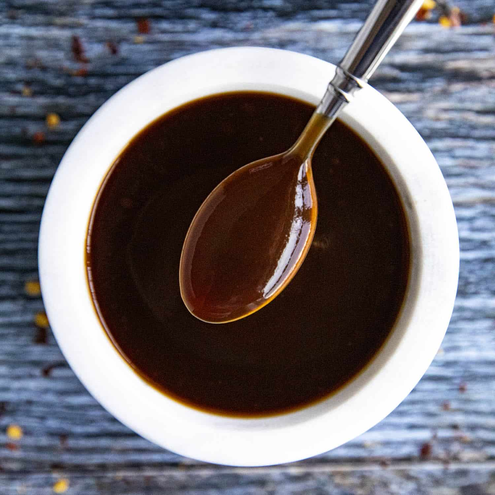

Tonkatsu Sauce

Description
Tangy tasty dipping sauce for katsu chicken but also pairs well
with coconut shrimp! Keep leftovers refrigerated.
Ingredients
- 1/2 cup of ketchup
- 2 tablespoons soy sauce
- 1 tablespoon brown sugar
- 1 tablespoon mirin (Japanese sweet wine)
- 1 1/2 teaspoons worcestire sauce
- 1 teaspoon grated fresh ginger
- 1 garlic clove, minced
Instructions
- Gather all ingredients.
- Stir together ketchup, soy sauce, brown sugar, mirin,
worcestire sauce, ginger, and garlic in a bowl.
- Let flavors blend for at least 30 minutes before
serving.